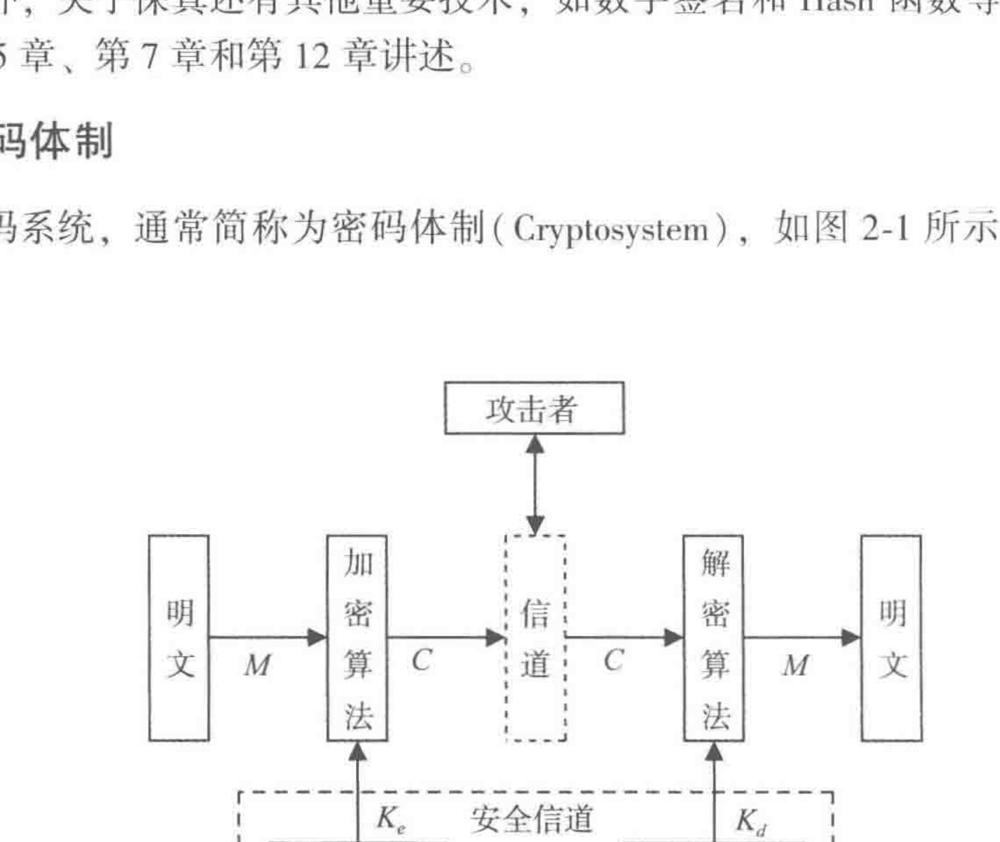
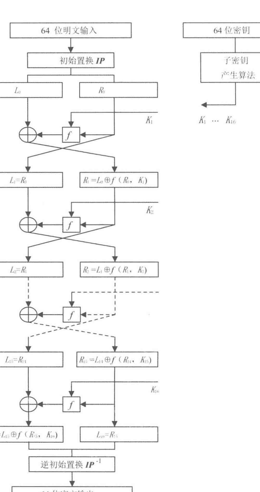
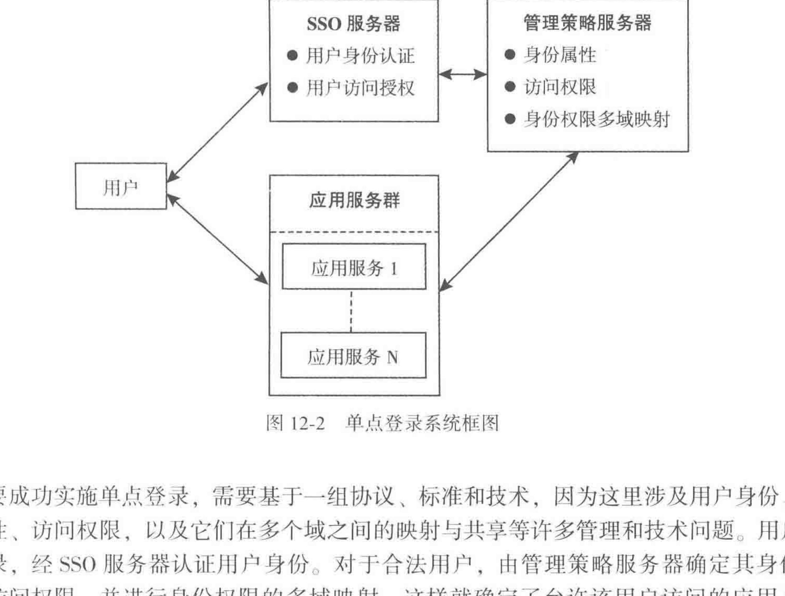

密码学引论
Note
本笔记按《密码学引论（第四版）》正文 14 章顺序整理。教材的知识链很稳定，先铺信息安全背景和密码学基本对象，再进入对称密码、公开密钥密码、数字签名、认证、密钥管理与协议，随后把这些工具放进抗量子密码、区块链和可信计算这些更具体的场景里。正文沿着同一条顺序推进，章节之间的依赖关系也按教材原有走向展开。
第一次读这门课时，视线可以始终沿着 攻击者能看到什么 -> 我们想保护什么 -> 形式化对象是什么 -> 算法怎样工作 -> 安全判断建立在什么前提上 -> 攻击会从哪里进入 这条线推进。密码学里的定义、公式、算法和协议放回这条线以后，理解会自然连起来。
第1章 信息安全概论
这一章先处理课程背景。密码学在整门课中的位置、信息安全面对的威胁、密码技术的职责范围、我国密码法和商用密码标准，都会在这里先摆正。
1.1 信息安全是信息时代永恒的需求
教材把课程开头放在信息安全的大背景里，这样安排很自然。密码学处在完整信息系统结构中，它出现的原因，是信息在产生、存储、传输、处理和使用的每个环节里都会暴露给不同类型的攻击者。电子政务、电子商务、社交平台、工业控制、云计算、物联网和移动终端把数据放进了更大范围的网络环境中，信息系统一旦承载真实业务，攻击面随之扩展到窃听、伪造、篡改、重放、拒绝服务、身份冒用和物理窃取这些层次。
课程里讨论的信息安全，落点在信息整个生命周期中的机密性、完整性、可用性以及与之相关的真实性、可控性和可审计性。机密性关心“别人是否能够读取”；完整性关心“内容是否保持原样”；可用性关心“系统是否持续提供服务”；真实性关心“对象身份是否与其声明一致”。后面的密码体制、数字签名、认证协议和密钥管理，都会围绕这些目标逐层展开。
量子计算在这一章里被单独点出来，目的在于提醒读者：密码学的安全性永远和计算能力、算法进展以及应用环境绑定在一起。今天觉得“够难”的问题，明天仍要重新接受检验。学习密码学时，把安全性看成一种依附于攻击模型和计算资源约束的判断，会更贴近真实语境。
1.2 信息安全的一些基本原则
教材先讲原则，再讲密码技术，目的是先把判断标准立住。这些原则一旦缺位，后面的算法细节就会散成一组分离的技巧。
先看“信息安全是系统属性”。一个系统由硬件、软件、数据、网络、人员和管理流程共同构成。局部环节表现良好时，系统安全仍需整体判断。密码算法很强，密钥一旦泄露，系统仍会失守；访问控制很严，日志和审计链条一旦断裂，攻击也可能长期潜伏；传输链路很稳，终端若被恶意代码控制，消息内容仍会在进入加密模块之前或离开解密模块之后暴露。
接着要把信息安全理解成分层问题。硬件安全、操作系统安全、网络安全、应用安全、数据安全和管理安全沿着系统结构向上叠加。密码学直接作用的对象主要是数据、通信和身份凭据，它发挥作用时依赖的背景，是更底层的执行环境与更外层的制度安排保持受控。
教材在这一节反复强调“安全与方便是一对矛盾”。这句话对应的正是工程约束。越强的身份认证、越严格的密钥管理、越频繁的轮换周期，往往意味着更高的成本和更复杂的使用路径。工程设计里的难点，集中在机制收益与运行成本、管理负担之间的平衡。
Tip
- 信息安全先看系统，再看算法。
- 安全目标先分机密性、完整性、可用性，再往后接真实性和不可否认性。
- 单项技术负责单项问题，系统安全来自多层拼接。
1.3 密码技术是信息安全的关键技术
在前两节把信息安全的威胁和原则铺开以后，教材才引入密码技术。这样顺下来就能理解：密码技术的作用，落在“数据和控制信息会暴露给不可信环境”这一前提下的机密性、完整性和真实性维持。
密码技术最直接的工作方式，是把数据处理成攻击者即使得到也难以利用的形式。对机密性而言，这表现为加密；对完整性和真实性而言，这表现为消息认证码、数字签名和认证协议；对密钥建立而言，这表现为密钥交换、密钥封装和密钥管理机制。只要把这些功能和前面的安全目标一一对应起来，整门课就有了清楚骨架。
这里很适合先把“算法公开”和“密钥保密”的关系放稳。现代密码学遵循的基本思想，是算法本身公开，安全性主要建立在密钥保密和困难问题上。这样设计的原因很直接：算法迟早会被研究和公开审视，合法用户稳定控制、攻击者又难以得到的对象，是密钥。
insight： 公开分析会把安全判断推向可重复检验的轨道，这一步支撑了现代密码学的稳定发展。实例化时用到的密钥、随机数和实现细节中的敏感状态，才是系统里需要严密保护的对象。
1.4 我国的密码法和商用密码标准
教材在第 1 章里安排密码法和商用密码标准，目的是把后面的算法学习直接放回我国的实际应用环境。密码学在课程里既是理论对象，也是制度对象和产业对象。算法何时能用、在哪些行业使用、谁负责管理、什么叫商用密码，这些都属于课程对象。
《中华人民共和国密码法》给出的是国家层面对密码工作的原则、分类和管理框架。教材中先讲密码工作的统一领导和分级负责，再讲核心密码、普通密码和商用密码三类划分。对本课程读者而言，最常见的对象是商用密码，也就是用于保护网络与信息系统安全的密码技术与产品。
我国商用密码标准在教材里占了一节，原因是这本书后面会系统讲到 SM2、SM3、SM4 和 ZUC。它们属于我国实际标准体系的重要组成部分。把这一点放在开头，后面读到 SM 系列算法时，读者对这些算法在应用体系中的位置会看得更稳。
1.5 小结
第一，密码学服务于信息安全，它主要解决其中一部分问题。第二，密码学讨论的安全性依赖攻击模型、系统环境和计算能力。第三，后面所有算法和协议，最终都会回到前面这几个安全目标上接受检验。
第2章 密码学的基本概念
这一章开始把“密码学到底研究什么”形式化。教材先给出密码体制和密码分析，再讲理论基础与古典密码。这个顺序非常关键，因为只有对象和攻击关系先摆出来，后面的公式、算法和安全判断才有稳定着力点。
2.1 密码学的基本概念
密码学研究的中心问题，是在存在攻击者的条件下，如何把明文、密文、密钥、算法和信道组织成一个仍然可控的系统。这里的“可控”至少包括两层。一层是正确性，也就是合法参与方手里的算法和密钥要能正常完成加解密、签名和验证。另一层是安全性，也就是攻击者即使得到某些可观察信息，攻击成本仍会被压到难以承受的范围。
2.1.1 密码体制
密码体制（cryptosystem）是这一章最基本的对象。它由明文空间、密文空间、密钥空间、加密算法、解密算法以及攻击者可接触到的通道共同组成。
设明文空间为 \(M\)，密文空间为 \(C\)，密钥空间为 \(K\)。一个最基本的加密体制包含两个算法：
其中 \(k\in K\) 表示密钥。正确性的要求写成公式就是
这个式子很短，其中只表达“能还原”这一层。安全问题会在攻击者可见信息与可交互能力被说明以后进入分析。

这张图把初学者最容易混在一起的几个对象拆开。明文和密文是数据对象，加密算法和解密算法是变换规则，密钥是控制这些变换的参数，信道是攻击者可能监听或干预的位置。把这几个对象摆清楚以后，后面讨论“明文攻击”“选择密文攻击”“工作模式”“数字签名”时，参照点会更稳定。
教材在这里还区分了分组密码、序列密码、对称密码和公开密钥密码。分组密码与序列密码按明文处理方式来分，前者按固定长度分组处理数据，后者生成密钥流逐位或逐字节处理数据；对称密码与公开密钥密码按密钥关系来分，前者加解密双方共享或等价共享密钥，后者把密钥分成公开部分和保密部分。
2.1.2 密码分析
密码分析研究的是攻击者怎样利用可观察信息、可交互能力和系统弱点去恢复明文、推断密钥，或者直接伪造有效结果。教材先讲它，是为了提醒读者：密码体制设计始终处在对抗环境里。
最基础的几类攻击模型需要先分清。
- 仅有密文攻击（ciphertext-only attack）：攻击者只能看到密文样本。
- 已知明文攻击（known-plaintext attack）：攻击者知道若干明密文对。
- 选择明文攻击（chosen-plaintext attack）：攻击者主动选明文并得到对应密文。
- 选择密文攻击（chosen-ciphertext attack）：攻击者主动提交密文并得到解密结果，目标密文本身通常排除在解密接口之外。
攻击能力从上到下逐步增强，因此一个体制若只覆盖较弱攻击模型，安全边界仍会很窄。现代安全定义往往直接把选择明文攻击甚至选择密文攻击纳入考虑范围。
教材还把分析方法分成穷举攻击、数学攻击、统计攻击和物理攻击。穷举攻击依赖密钥空间大小；数学攻击利用算法结构和数论问题；统计攻击利用明文与密文中可见的分布规律；物理攻击利用实现时泄露出的时间、功耗、电磁和故障信息。后面第 9 章会把其中几类系统展开。
2.1.3 密码学的理论基础
教材把这一节放在古典密码之前，原因在于理论基础缺位时，后面所有安全判断都会停留在经验描述层。密码学常见的理论基础主要有三块：信息论、计算复杂性理论和概率统计。
先看信息论。若把明文 \(M\) 和密文 \(C\) 都视作随机变量，熵
衡量的是明文在攻击者视角下的不确定性。若观察到密文以后，明文的不确定性保持原状，也就是
或者等价地写成互信息 \(I(M;C)=0\)，那么这个体制达到了完全保密（perfect secrecy）。这个定义来自 Shannon，它给密码学提供了一条非常清楚的理想边界。
完全保密对应的实现条件很高。一次一密理论上可以达到完全保密，可它要求密钥长度至少与消息同长，密钥真正随机，而且每个密钥只能使用一次。于是教材很自然地把讨论推向第二块基础，也就是计算复杂性。现实里更常见的表述，是攻击者在可接受时间内难以完成攻击，于是安全性从绝对不可得转成了计算上不可行。
第三块基础是概率统计。随机数质量、碰撞概率、生日悖论、误判概率和假设检验会在 Hash 函数、数字签名和认证协议里反复出现。例如，对 \(n\) 位 Hash 值来说，暴力找原像通常需要大约 \(2^n\) 次尝试，而碰撞往往在 \(2^{n/2}\) 量级上就值得警惕，这就是生日界的典型结果。
insight： 密码学里的许多“安全”表述，指向的是攻击成本随参数增长迅速上升，以至于现实攻击者承担不起。把这层意思抓住以后，后面面对 DES、AES、RSA 和 Hash 长度这些问题时，直觉会稳定很多。
2.2 古典密码
教材从古典密码进入，目的是把替换、置换、密钥空间、统计特征和攻击思路直接铺开。初学者在古典密码里把这些关系看清楚以后，后面进入现代密码会轻松很多。
2.2.1 置换密码
置换密码做的事情，是改变符号出现的位置，同时保持符号本身。最简单的情况，是把明文按某个固定排列规则重新排序。于是明文字母集合保持不变，单个字母的出现频率也保持不变，局部顺序发生改变。
这类密码的优点，在于规则清楚，密钥对象一眼就能落到“排列”上；它的短板也非常直接，因为统计结构保留得太多，一旦攻击者拿到足够长的密文样本，就能从频率和重复模式里逐步恢复排列关系。
2.2.2 代换密码
代换密码改变的是“符号映射关系”。最常见的例子是 Caesar 密码，也就是把字母表整体平移一个固定长度。若把字母表看成模 26 上的整数，设 \(k\) 为位移量，则有
这个例子虽然简单，却把“加密规则”“密钥”“明文空间”“密文空间”四个对象完整摆出来了。明文空间和密文空间都可以看成 26 个字母组成的集合，规则是模 26 加法，密钥是 \(k\)。密钥空间很小，穷举代价也随之很低。
从代数角度看，Caesar 密码是在加法群 \(\mathbb Z_{26}\) 上做平移。教材后面提到的代数密码，可以把这条思路推广成仿射变换
这里 \(a,b\in\mathbb Z_{26}\)，\(a^{-1}\) 表示 \(a\) 在模 26 下的乘法逆元。解密式能够写出来，关键在于乘法部分在 \(\mathbb Z_{26}\) 上可逆，于是要求
当这个条件成立时，扩展欧几里得算法就能找到整数 \(u,v\) 使得
于是 \(u\) 在模 26 下就是 \(a^{-1}\)。取 \(a=5,b=8\) 做一个完整例子。字母 H 对应 \(m=7\)，则
也就是字母 R。又因为 \(5\cdot 21=105\equiv 1\pmod{26}\)，所以解密时有
这一步把“为什么仿射密码能解开”落到了一个非常具体的对象上：乘法系数在模 26 下需要存在逆元。
下面这段代码把 Caesar 与仿射代换写成一个可以直接运行的教学版本。第一次自己动手时，可以先代入几个单字母样例核对公式，再用整句明文检查整个加解密过程。
import math
import string
ALPHABET = string.ascii_uppercase
def modinv(a: int, m: int) -> int:
t, new_t = 0, 1
r, new_r = m, a
while new_r:
q = r // new_r
t, new_t = new_t, t - q * new_t
r, new_r = new_r, r - q * new_r
if r != 1:
raise ValueError("a has no inverse modulo m")
return t % m
def affine_encrypt(text: str, a: int, b: int) -> str:
if math.gcd(a, 26) != 1:
raise ValueError("a must be coprime with 26")
out = []
for ch in text.upper():
if ch in ALPHABET:
m = ord(ch) - ord("A")
c = (a * m + b) % 26
out.append(chr(c + ord("A")))
else:
out.append(ch)
return "".join(out)
def affine_decrypt(text: str, a: int, b: int) -> str:
a_inv = modinv(a, 26)
out = []
for ch in text.upper():
if ch in ALPHABET:
c = ord(ch) - ord("A")
m = (a_inv * (c - b)) % 26
out.append(chr(m + ord("A")))
else:
out.append(ch)
return "".join(out)
教材在这里还介绍了 Vigenere 密码和 Vernam 密码。Vigenere 用多个 Caesar 位移循环作用于不同位置，目标是打散单表代换的频率特征。Vernam 密码则把明文与密钥逐位异或：
若 \(k_i\) 真随机、等长且只用一次，Vernam 就退化成一次一密；若密钥流可重复或可预测，它又会退回到可分析的序列体制。这一步正好把古典密码和现代序列密码接到了一起。
教材还专门举了日升昌票号的例子，这个案例提醒读者：现实密码设计同时包括票据真伪、传递过程中的身份确认和规则保密。古典场景里的安全，已经呈现为“算法 + 管理 + 场景”共同决定的结果。
2.2.3 代数密码与古典设计的边界
古典代数密码把加法、乘法、排列和代换进一步组合起来，结构看上去更复杂，短板仍然集中在统计结构暴露、密钥空间偏小和主动攻击考虑偏弱这几处。现代密码的出现，正是围绕这些位置逐步展开的。
2.3 古典密码的统计分析
教材在这里引入语言统计特性，是为了让读者看到一个事实：攻击者除了直接对算法做代数求解，也经常对“明文本身是自然语言”这件事下手。
2.3.1 语言的统计特性
自然语言拥有稳定分布。英文字母里，E、T、A 等字母出现更频繁；字母二元组和三元组也有明显偏好，比如 TH、HE、ING。只要密文变换保留了这些统计结构，攻击者就能沿着频率最高的字母和常见词形去试探映射关系。
2.3.2 古典密码分析
单表代换之所以容易被频率分析击破，原因就在于“高频明文字母会稳定映射到高频密文字母”。一旦攻击者拿到足够长的密文，就可以先猜最高频字符，再用词形、双字母和上下文把猜测不断修正。多表代换和置换-代换混合能延缓这种攻击，统计分析依旧会沿着周期和结构继续推进。
统计攻击落到计算公式里时，常见做法是给每个候选明文打一个“语言贴近度”分数。设候选文本长度为 \(N\)，第 \(i\) 个字母的观测次数为 \(f_i\)，目标语言中的理论频率为 \(p_i\)，那么常用的 \(\chi^2\) 评分写成
分数越小，说明这个候选文本的字母分布越接近目标语言。对 Caesar 密码而言，密钥空间一共 26 种位移，于是攻击流程就被压成了三步：枚举 26 个位移、把每个候选明文算出 \(\chi^2\) 分数、选出分数最小的候选。
from collections import Counter
EN_FREQ = [
0.08167, 0.01492, 0.02782, 0.04253, 0.12702, 0.02228, 0.02015,
0.06094, 0.06966, 0.00153, 0.00772, 0.04025, 0.02406, 0.06749,
0.07507, 0.01929, 0.00095, 0.05987, 0.06327, 0.09056, 0.02758,
0.00978, 0.02360, 0.00150, 0.01974, 0.00074,
]
def caesar_shift(text: str, k: int) -> str:
out = []
for ch in text.upper():
if "A" <= ch <= "Z":
x = ord(ch) - ord("A")
out.append(chr((x + k) % 26 + ord("A")))
else:
out.append(ch)
return "".join(out)
def chi_square_score(text: str) -> float:
letters = [ch for ch in text if "A" <= ch <= "Z"]
n = len(letters)
counts = Counter(letters)
score = 0.0
for i, p in enumerate(EN_FREQ):
observed = counts.get(chr(i + ord("A")), 0)
expected = n * p
score += (observed - expected) ** 2 / expected
return score
def crack_caesar(ciphertext: str):
candidates = []
for k in range(26):
plain = caesar_shift(ciphertext, -k)
candidates.append((k, plain, chi_square_score(plain)))
return min(candidates, key=lambda item: item[2])
2.4 从古典密码过渡到现代密码
本章中，读者会看到现代密码为什么会出现。古典密码的问题集中在三个方面：密钥空间太小，统计结构泄露太多，对主动攻击者考虑偏弱。现代密码基本上就是围绕这三处短板逐步建立起来的。
第3章 分组密码
这一章进入现代对称密码的主干。教材先讲 DES，再讲 AES 和 SM4，顺序本身就反映了一条历史与方法并行的线索：先看 Feistel 结构如何工作，再看代换-置换网络怎样把非线性和扩散做得更强，随后把这些思想落到我国商用标准里。
3.1 数据加密标准（DES）
DES 是现代分组密码课程里的经典入口，因为它把轮函数、子密钥、迭代结构、S 盒、扩散和混淆这些概念集中展示出来。DES 处理 64 位分组，名义密钥长度 64 位，其中 8 位用于奇偶校验，真正参与安全性的有效密钥长度是 56 位。
DES 的核心结构是 Feistel 结构。设第 \(i\) 轮输入为 \((L_i,R_i)\)，子密钥为 \(K_i\)，则一轮更新写成
这条式子很值得慢一点看。左半边直接拿右半边，右半边把原左半边和轮函数输出异或。于是每一轮都让数据的一部分直接流动，另一部分经过非线性处理以后再反馈回来。16 轮之后，再加上初始置换和逆初始置换，就得到完整密文。

这张图帮助读者看清两个点。第一，Feistel 结构天然支持“同一轮函数、逆序子密钥”完成解密，因为每一轮本身就是可逆的。第二，主要安全压力落在中间的轮函数 \(f\)、子密钥调度和多轮迭代上。
3.1.1 DES 的加解密过程
DES 的整体流程可以分成四层来看。最外层是 64 位输入与输出；中间是 16 轮 Feistel 迭代；每轮里又包含扩展 \(E\)、与子密钥异或、S 盒代换和置换 \(P\)；而子密钥本身来自 56 位主密钥经过置换选择和循环左移产生的 16 个 48 位子密钥。
更顺的读法，是沿着“为什么要有这几个步骤”往下走。扩展 \(E\) 把 32 位右半部拉成 48 位，是为了和 48 位子密钥混合；S 盒把 48 位重新压回 32 位，同时提供关键非线性；置换 \(P\) 则把局部变化扩散到更多位置。
Feistel 结构的可逆性，也可以直接从一轮方程里推出来。已知
把第一条式子代回第二条式子，就能得到
这两条反解式说明：解密时轮函数 \(f\) 本身保持不变，子密钥顺序倒过来就能逐轮回退。教材把 DES 放在分组密码开头，正是因为这组方程把“结构设计怎样保证正确性”讲得非常直观。
下面这段代码把 Feistel 的核心轮更新压缩成一个 4 比特半分组的教学例子。它不追求真实安全参数，目标只有一个，就是把“同一轮函数配合逆序子密钥就能解密”这件事跑通。
def toy_f(x: int, k: int) -> int:
return (((x << 1) | (x >> 3)) & 0xF) ^ k
def feistel_round(L: int, R: int, K: int):
return R, L ^ toy_f(R, K)
def feistel_encrypt(block: tuple[int, int], keys: list[int]):
L, R = block
for K in keys:
L, R = feistel_round(L, R, K)
return L, R
def feistel_decrypt(block: tuple[int, int], keys: list[int]):
return feistel_encrypt(block, list(reversed(keys)))
keys = [0x3, 0xA, 0x7]
plain = (0x4, 0xD)
cipher = feistel_encrypt(plain, keys)
recovered = feistel_decrypt(cipher, keys)
print(plain, cipher, recovered)
3.1.2 DES 的非线性
DES 的非线性主要由 8 个 S 盒提供。若整个 DES 都落在线性关系里，攻击者就能把系统压成较容易求解的方程组，安全边界会迅速收缩。S 盒的输入是 6 位，输出是 4 位，看上去很小，却承担了让比特间关系变得复杂的任务。
insight： 初学者很容易把“置换很多、表格很长”误看成 DES 的主要安全来源。DES 中承担主要安全任务的部分，是 S 盒提供的非线性以及多轮结构制造的雪崩效应。把这一点看清以后，后面学习 AES 的字节代换时就能看出两者在目标上的一致性。
3.1.3 DES 的安全性与 3DES
DES 在设计层面很漂亮，56 位有效密钥长度最终限制了它的寿命。随着专用硬件和分布式计算的发展，穷举 DES 的成本持续下降，因此它逐步退出了现代长期安全方案的主流位置。
3DES 的思路很直接，就是把 DES 反复调用三次，常见形式是 EDE：
这样做的收益，是把穷举门槛重新抬高，同时保留与旧系统的一定兼容性。它的代价也很明显，速度较慢，结构较重，因此后来逐步被 AES 替代。
3.2 高级数据加密标准（AES）
AES 的出现，回应的就是 DES 在密钥长度和结构年代上的压力。教材在这里先讲数学基础，再讲 RIJNDAEL 加解密算法，原因在于 AES 采用代换-置换网络（substitution-permutation network, SPN）。先理解有限域上的字节运算以后，轮函数的组织方式会更清楚。
3.2.1 数学基础
AES 把 128 位分组组织成 \(4\times 4\) 的字节状态矩阵，很多运算都在有限域 \(GF(2^8)\) 上进行。这样设计的好处，是字节级代换和列混合都能用统一的代数框架表达。初学时先抓住“字节是有限域元素”这一点，理解会更稳。
这一层最关键的两个数学部件，分别是 S 盒和列混合。AES 的 S 盒可以写成
这里 \(A\) 是固定可逆仿射变换，\(b\) 是固定常量向量。先取乘法逆元，再做仿射变换，目的是把非线性和结构规则性放进同一个设计里。列混合则把一列四个字节写成向量，再左乘固定矩阵
这样一来，同一列里任何一个字节的变化都会扩散到整列四个位置，扩散速度会比单纯按字节独立处理快得多。
3.2.2 RIJNDAEL 加密算法
AES 每轮主要包含四步：SubBytes、ShiftRows、MixColumns 和 AddRoundKey。四步的职责很清楚。
SubBytes用 S 盒逐字节代换，提供非线性。ShiftRows让各行错位，打破列内局部性。MixColumns在列内做线性混合，把局部变化扩散到整个状态。AddRoundKey把轮密钥注入状态，让同一算法在不同密钥下表现不同。
AES 的安全性，建立在非线性、扩散和多轮密钥注入共同作用的结构上。它在软件和硬件实现上也更适合现代平台。
把 MixColumns 写成代码以后，这层线性扩散会更容易看清。下面的 gf_mul 实现有限域上的字节乘法，mix_single_column 则把上面的矩阵乘法落到一列 4 个字节上。
def xtime(x: int) -> int:
x <<= 1
if x & 0x100:
x ^= 0x11B
return x & 0xFF
def gf_mul(a: int, b: int) -> int:
out = 0
for _ in range(8):
if b & 1:
out ^= a
a = xtime(a)
b >>= 1
return out
def mix_single_column(col: list[int]) -> list[int]:
s0, s1, s2, s3 = col
return [
gf_mul(0x02, s0) ^ gf_mul(0x03, s1) ^ s2 ^ s3,
s0 ^ gf_mul(0x02, s1) ^ gf_mul(0x03, s2) ^ s3,
s0 ^ s1 ^ gf_mul(0x02, s2) ^ gf_mul(0x03, s3),
gf_mul(0x03, s0) ^ s1 ^ s2 ^ gf_mul(0x02, s3),
]
3.2.3 RIJNDAEL 解密算法与实现
解密过程对应使用逆字节代换、逆行移位、逆列混合和轮密钥逆序注入。这里很适合顺手澄清一个常见误解：解密算法存在，对应的是正确性层；安全性分析落在另一层。
工程实现里，AES 常结合查表、位切片、AES-NI 指令和并行流水线来优化速度。实现优化本身又会引出新的安全问题，例如缓存访问模式和功耗特征可能泄露中间状态，这就把教材后面的侧信道分析自然引了出来。
3.3 中国商用密码算法 SM4
SM4 是我国商用密码标准中的分组密码算法，处理 128 位分组，密钥长度也是 128 位。它采用 32 轮迭代结构，每轮都包含非线性变换和线性扩散变换。阅读 SM4 时，把它放进“现代分组密码共同任务”里理解会更顺，也就是继续沿着非线性、扩散、密钥注入和多轮叠加这条线推进。
SM4 的一轮可以概括为“先代换，后线性扩散，再与旧状态结合”。它与 AES 的具体细节不同，目标保持一致：让明文和密钥对输出的影响快速弥散到整个分组中。
3.4 分组密码的应用技术
单个分组怎样加密，属于这一章的第一步。现实消息通常长于一个分组，于是教材接着讲工作模式和应用技术，这一步非常关键。
3.4.1 工作模式
ECB、CBC、CFB、OFB 和 CTR 这些工作模式，差别落在“一个分组的处理是否依赖别的分组、错误会怎样传播、是否适合并行、是否需要随机初始量”这些关系上。
ECB 结构最直观，也最容易误用。它直接对每个分组独立加密，所以相同明文分组会得到相同密文分组。这样一来，数据内容虽被加密，结构仍会外露，图片加密时轮廓仍然可见就是一个很典型的表现。
CBC 通过把当前明文分组先与前一密文分组异或，再送入分组密码，打破了相同明文分组的确定性；CTR 则把分组密码转成密钥流生成器，适合并行和随机访问；CFB 与 OFB 把分组密码用于流式场景，错误传播特性又各不相同。只要把“依赖关系”和“错误传播”两条线抓牢，这几种模式就容易分清。
3.4.2 应用里的常见误解
工作模式选定以后，系统分析会继续转到上层用法。随机初始向量、唯一 nonce、填充方式、认证机制和密钥复用规则都会影响最终安全性。现代工程里大量使用带认证的加密方式，正是长期工程经验收束出来的结果。
第4章 序列密码
分组密码解决的是定长分组的非线性变换问题，序列密码解决的是怎样生成一个足够好的密钥流，并把它安全地叠加到明文上。教材把它放在分组密码后面，正好能让读者看到两类对称密码在处理数据和组织状态上的差异。
4.1 序列密码的概念
序列密码通常先生成密钥流 \((z_1,z_2,\dots)\)，再与明文流 \((m_1,m_2,\dots)\) 逐位或逐字节组合，最常见的是异或：
这种组织方式实现简单、延迟低，也很适合实时通信。困难集中在密钥流生成器上。密钥流一旦可预测、周期太短，或者在不同会话之间被复用，系统安全就会迅速收缩。

这张图把序列密码的工作入口画得很清楚。发送端和接收端共享同一份种子密钥，各自独立生成密钥序列，再把密钥序列与明文序列或密文序列逐位组合。读图时要盯住“真正反复参与运算的是密钥序列”这一点，种子密钥负责启动生成器，后续安全性会集中落在密钥流能否被预测、种子是否复用以及通信双方能否保持同步。
4.2 随机序列的安全性
教材先讲随机和伪随机，是为了让读者分清“分布上接近随机”和“对攻击者计算上不可预测”分别对应哪一层含义。对密码学而言，一个好的密钥流至少要满足两个要求：统计分布上接近随机，计算上难以预测后续输出。
若一个序列只有频率均匀这一层性质，却能由短状态轻易恢复，安全强度就会很弱；若一个序列在理论上来自安全生成器，实现里却重复使用同一初始向量，系统同样会败露。随机性因此同时落在数学问题和系统使用规则问题上。
4.3 线性移位寄存器序列
线性反馈移位寄存器（LFSR）是序列密码里最典型的结构。它用若干寄存器保存状态，每步根据线性反馈函数更新状态并输出一位或若干位。LFSR 的优点是实现简洁，周期和统计性质可分析，硬件代价低；弱点集中在线性结构太强，攻击者可以借助 Berlekamp-Massey 一类方法恢复反馈关系。
教材在这里安排 LFSR，很像 DES 中安排 S 盒，目的都是把“现代密码为什么要引入非线性”讲清楚。线性关系一旦暴露得过多，分析者就能把问题压成较容易求解的结构。

这张图展示了反馈移位寄存器里最核心的状态更新关系。若干寄存器单元沿着时钟脉冲依次移位，抽头位置上的比特经过异或形成新的反馈值，再回灌到寄存器一端。把这张图和前面的文字合在一起看，LFSR 的强项与短板都会更直观：状态更新规则很整齐，周期分析和硬件实现都很方便，攻击者也更容易把输出关系整理成线性方程。
把寄存器内容写成序列以后，LFSR 的反馈关系可以表达成
其中 \(c_0,\dots,c_{n-1}\in GF(2)\) 表示抽头位置。对应的连接多项式写成
教材在这里引入连接多项式，目的就是把“电路接法”转写成一个可分析的代数对象。若 \(g(x)\) 是 \(GF(2)\) 上的本原多项式，而且初始状态取非零向量，那么输出序列的周期会达到
这就是 m 序列最常见的理论来源。
def lfsr_step(state: list[int], taps: list[int]) -> int:
feedback = 0
for i in taps:
feedback ^= state[i]
out = state[-1]
state[1:] = state[:-1]
state[0] = feedback
return out
state = [1, 0, 0, 1] # s0, s1, s2, s3
taps = [0, 3] # x^4 + x + 1
bits = [lfsr_step(state, taps) for _ in range(15)]
print(bits)
4.4 非线性序列
为了克服 LFSR 的线性弱点，现代序列密码往往采用非线性组合函数、过滤函数、多寄存器耦合或更复杂的状态更新。非线性的目标始终一致，就是让攻击者难以从可见输出回推出内部状态。
4.5 祖冲之密码（ZUC）
ZUC 是我国商用密码标准中的序列密码算法，也是 3GPP 采用的国际标准之一。它由线性反馈移位寄存器、比特重组和非线性函数三部分组成，最终生成用于机密性和完整性保护的密钥流。
教材把 ZUC 以及基于它的 128-EEA3、128-EIA3 放在这一章后半段，目的是让读者在先理解“序列密码需要一个好的密钥流生成器”以后，再看我国标准方案怎样把这一需求具体实现到移动通信场景里。
第5章 密码学 Hash 函数
这一章处理摘要、完整性和压缩映射。教材把 Hash 函数放在对称密码之后、公开密钥密码之前，位置很合适，因为它既会独立用于完整性校验，也会成为签名和认证协议里的基础积木。
5.1 密码学 Hash 函数的概念
密码学 Hash 函数把任意长输入映射为定长输出：
这里先分清对象。输入 \(M\) 可以是任意长度消息，输出 \(h\) 是固定长度摘要。Hash 在系统里主要承担摘要表示、完整性校验和上层协议支撑这些职责。
教材在这一节特别强调，Hash 的主要用途是支撑完整性、摘要表示、签名和认证。只要消息发生任何变化，摘要都应高度敏感地变化。于是接收方不必长期保存整份原文，也能先对“内容是否保持原样”做快速判断。
5.2 密码学 Hash 函数的安全性
Hash 函数常见的三条安全性质分别是：
- 原像抗性：给定 \(h\)，寻找 \(m\) 使 \(H(m)=h\) 的代价很高。
- 第二原像抗性：给定 \(m\)，寻找 \(m'\neq m\) 且 \(H(m')=H(m)\) 的代价很高。
- 抗碰撞性：寻找任意一对 \(m\neq m'\) 且 \(H(m)=H(m')\) 的代价很高。
这三条性质看似接近，层次仍有差别。原像抗性更像“从输出反推输入”的困难；抗碰撞性更像“在整个定义域里找一对相同输出”的困难。正因为问题形式不同，它们对应的攻击成本也不同。若输出长度为 \(n\) 位，原像攻击通常在 \(2^n\) 量级上讨论，而碰撞攻击会受生日界影响落到 \(2^{n/2}\) 量级。
生日界可以直接从“无碰撞概率”推出来。设 Hash 输出空间大小为 \(2^n\)，攻击者一共观察到 \(q\) 个独立输出。第一份输出一定不会和前面的结果碰撞，第二份输出与前一份不同的概率是 \(1-\frac{1}{2^n}\)，第三份输出与前两份都不同的概率是 \(1-\frac{2}{2^n}\)，依次乘起来得到
当 \(q\ll 2^n\) 时，可以用 \(\ln(1-x)\approx -x\) 近似，于是
从而得到
当指数项进入常数量级时，碰撞概率就已经明显抬升，于是 \(q\) 会自然落到 \(2^{n/2}\) 量级。这就是课程里反复提到“\(n\) 位摘要的碰撞安全强度大约是 \(n/2\) 位”的来源。
5.3 密码学 Hash 函数的一般结构
现代 Hash 函数常用的做法，是先把消息填充、分组，再反复调用压缩函数，把前一轮链值和当前消息分组合成新的链值。教材用这一节把后面的 SM3 和 SHA-3 统一到一个大框架里。

这张图把“摘要来自哪里”说得很清楚。摘要由初始链值 \(CV_0\) 出发，经过每个消息分组 \(M_i\) 与压缩函数 \(f\) 逐步迭代得到。脑中有了这幅结构图以后，后面再看消息填充、长度附加和长度扩展问题时，落点会非常清楚。
5.4 中国商用密码杂凑算法 SM3
SM3 是我国商用密码标准中的 Hash 算法，输出长度为 256 位。它沿用迭代压缩框架，但在消息扩展、布尔函数和轮常量设计上具有自己的结构。
阅读 SM3 时，重点可以放在三件事上。第一，消息怎样经过填充后切成 512 位分组；第二，消息扩展怎样把原始分组展开成更多轮输入，以增强扩散；第三，压缩函数怎样通过若干轮迭代不断更新内部状态。把这些内容放回“如何提高扩散和非线性”这条线，结构就会清晰很多。
5.5 SHA-3 与海绵结构
教材把 SHA-3 单独列出，是为了让读者看到另一条设计路线。SHA-3 采用海绵结构（sponge construction），用“吸收”和“挤出”两个阶段处理任意长消息，并通过内部状态分区、迭代置换和容量参数来组织安全性与性能。
把 SHA-3 和前面的传统迭代结构放在一起看，读者会看到：Hash 设计存在多条路线，安全目标相同，内部组织可以不同。
第6章 公开密钥密码
这一章处理的是现代密码学最重要的一次观念转变。对称密码把困难集中在“怎样共享密钥”，公开密钥密码把这个问题的一大部分前移到数学结构上，通过公开部分和私有部分的分离来改变通信组织方式。
6.1 公开密钥密码的基本概念
公开密钥密码的核心思想，是把原来同一个密钥承担的两种职责拆开。设公开密钥为 \(K_e\)，私有密钥为 \(K_d\)。系统要求任何人都可以拿到 \(K_e\) 做公开操作，合法持有者掌握 \(K_d\)。这样一来，机密通信、数字签名和密钥分发都能获得新的组织方式。
这里先分清“易算”和“难逆”分别落在什么对象上。对合法用户而言，由 \(K_e\) 执行公开操作和由 \(K_d\) 执行私有操作都很顺畅；对攻击者而言，困难落在只根据公开信息去恢复私有密钥，或者在不知道私钥的条件下完成等价伪造。公开密钥密码的结构，因此呈现为“合法路径顺畅，非法逆向困难”。
6.2 RSA 密码
RSA 是最经典的公开密钥密码体制。它建立在大整数因子分解难题上。密钥生成分成几步：选取两个大素数 \(p,q\)，计算
接着选取满足 \(\gcd(e,\varphi(n))=1\) 的公开指数 \(e\)，再求出私有指数 \(d\) 使
之后公钥为 \((n,e)\)，私钥为 \((n,d)\)。加密与解密写成
第一次学习时，亲手走一个小例子会很顺。设 \(p=61,q=53\)，则 \(n=3233\)，\(\varphi(n)=3120\)。若取 \(e=17\)，则可算得 \(d=2753\)。若明文 \(m=65\)，则
再解密可还原 \(65\)。这个例子用于教学，真实系统中的素数规模会大得多。
私有指数 \(d\) 的求法，本身就是扩展欧几里得算法的一个完整示例。对上面的参数来说，先做辗转相除：
接着从最后一条式子回代：
于是
所以 \(d\equiv -367\equiv 2753\pmod{3120}\)。这一段回代过程值得亲手写一遍，因为它把“模逆元”从抽象符号变成了可以逐步算出来的对象。
def egcd(a: int, b: int):
if b == 0:
return a, 1, 0
g, x1, y1 = egcd(b, a % b)
return g, y1, x1 - (a // b) * y1
def modinv(a: int, m: int) -> int:
g, x, _ = egcd(a, m)
if g != 1:
raise ValueError("inverse does not exist")
return x % m
def rsa_keygen(p: int, q: int, e: int):
n = p * q
phi = (p - 1) * (q - 1)
d = modinv(e, phi)
return (n, e), (n, d)
def rsa_encrypt(m: int, pub: tuple[int, int]) -> int:
n, e = pub
return pow(m, e, n)
def rsa_decrypt(c: int, prv: tuple[int, int]) -> int:
n, d = prv
return pow(c, d, n)
6.2.1 RSA 为什么正确
RSA 的正确性来自模幂与欧拉定理的配合。因为 \(ed=1+k\varphi(n)\)，在适当条件下有
于是“先加密再解密”能够回到原文。这个证明告诉我们：RSA 首先是一套数论结构，然后才是一种工程工具。
6.2.2 RSA 的安全性
RSA 的安全性更稳妥的说法是：它至少依赖三层因素。第一，攻击者难以从 \(n\) 恢复素因子 \(p,q\)。第二，参数选择要合理，比如公开指数、私钥规模和素数生成方式都要保持稳健。第三，工程上需要配合随机填充，例如 OAEP，同时把选择密文攻击纳入协议设计。
insight： 数学上正确与工程上安全分属两个层次。裸 RSA 满足 \(m\mapsto m^e\bmod n\) 的正确性，但它是确定性的，同一明文总会映射成同一密文，因此会泄露结构，也会缩小安全边界。工程部署时通常使用“RSA + 填充 + 协议约束”的整体。
6.3 ElGamal 密码
ElGamal 建立在离散对数难题上。其基本结构是：在某个群中选生成元 \(g\)，私钥为 \(x\)，公钥为 \(y=g^x\)。加密时再选随机数 \(k\)，输出形如 \((g^k, m\cdot y^k)\) 的密文。解密方利用自己的 \(x\) 恢复共享因子，再还原 \(m\)。
这里很适合单独看随机数 \(k\) 的作用。它属于 ElGamal 安全性的核心组成部分。若 \(k\) 缺位，同一明文会稳定映射到同一密文，很多结构信息会立刻暴露出来。
6.4 椭圆曲线密码
椭圆曲线密码（ECC）把困难问题换成椭圆曲线群上的离散对数问题。它的优势主要落在“同等安全级别下参数更短”，因此计算、存储和传输代价往往更低。初学 ECC 时，先抓住对象变化这一点，理解会更稳：难题落在群运算中的标量乘法逆问题上。
SM2 是我国商用密码标准中的椭圆曲线公开密钥算法。教材把它放进这一章，是为了让读者看到我国标准体系在公钥密码上的完整落点。理解 SM2 时，先抓住曲线参数、密钥对、随机数、点乘和编码规则，再去看具体流程，顺序会更稳。
第7章 数字签名
前一章解决的是公开密钥怎样用于保密通信，这一章解决的是公开密钥怎样用于真实性与不可否认性。教材把签名单独成章，很有必要，因为“加密”和“签名”虽然都调用公开密钥思想，安全目标完全不同。
7.1 数字签名的概念
数字签名要回答的问题是：接收方怎样判断一条消息确实来自某个声明的发送者，内容在途中保持原样，发送者事后又难以否认自己做过这次签名。于是数字签名主要对应三类目标：完整性、真实性、不可否认性。
签名与加密的差别需要尽早讲清。加密主要保护消息不被无关者读懂，签名主要证明消息是谁发出的以及内容是否保持原样。真实系统里两者常同时出现，作用方向却完全不同。
7.2 利用公开密钥密码实现数字签名
最基本的签名思路，是发送方用私钥对消息摘要进行某种运算，接收方用公钥验证结果是否匹配。工程里通常对摘要签名，因为摘要长度固定，签名效率更高，同时还能把“对任意长消息签名”的问题规整为“对固定长度代表值签名”的问题。
7.2.1 RSA 签名
RSA 签名与 RSA 加密在形式上很像，方向则反过来了。发送方计算
接收方检查
若等式成立，说明这份签名与发送方私钥一致。工程部署时还会加入标准化填充和编码规则，例如 PSS。
7.2.2 ElGamal、DSS 与椭圆曲线签名
ElGamal、DSA、ECDSA 和 SM2 签名都把随机数引入到了签名过程中。这样做的原因，是为了防止结构过于确定而泄露私钥关系。这里初学者很容易卡住的点，是“为什么同一消息每次签名结果不同，却仍然能验证”。答案在于：验证者检查的是“签名值与公钥、消息摘要之间的代数关系是否成立”。
以 DSA 为例，设 \(p,q\) 为参数，\(g\) 为阶为 \(q\) 的生成元，私钥为 \(x\)，公钥为 \(y=g^x\bmod p\)。签名时选取随机数 \(k\)，计算
验证阶段先求
再计算
当 \(v=r\) 时，签名验证通过。把这几条式子连起来看，随机数 \(k\) 的职责就很清楚了：它把每次签名都送到新的代数轨道上，同时仍然让验证者能够沿着固定关系检查签名是否由私钥生成。
insight： 签名随机数一旦重复使用，私钥会直接掉进一个一次方程里。这个问题很适合单独放进风险清单，因为它把“一个实现细节”怎样升级成“整个体制失守”讲得极其具体。
设同一私钥对两条消息 \(m_1,m_2\) 使用了同一个 \(k\)，于是两次签名共享同一个 \(r\)，同时满足
两式相减以后可以直接得到
把 \(k\) 代回任一条签名式，就能恢复私钥
def recover_dsa_nonce(h1: int, h2: int, s1: int, s2: int, q: int) -> int:
return ((h1 - h2) * pow(s1 - s2, -1, q)) % q
def recover_dsa_private(h1: int, r: int, s1: int, k: int, q: int) -> int:
return ((s1 * k - h1) * pow(r, -1, q)) % q
SM2 签名相比一般椭圆曲线签名还有一个很重要的设计点，就是把用户身份信息和公钥参数一起压入摘要中形成 \(Z_A\)。这样做的目的，是把“谁在签”这个身份上下文提前绑定到签名计算里。
7.3 数字签名与消息认证码的边界
消息认证码也能验证完整性和真实性，它依赖共享密钥，因此难以自然提供不可否认性。只要双方都掌握同一把密钥，验证方就同样具备生成有效标签的能力。数字签名的重要性，正落在“验证能力公开，生成能力留在私钥一侧”这条结构上。
第8章 抗量子计算密码
教材把这一章放在传统公钥和签名之后，目的很清楚：先看今天常用的公钥密码建立在什么困难问题上，再回头看量子计算怎样动摇这些基础。
8.1 量子计算对现有公钥密码的挑战
对 RSA、ECC 这类体制而言，最重要的威胁来自 Shor 算法。它使大整数因子分解和离散对数这两类问题在量子模型下获得了远快于经典算法的解法。于是“传统公钥为什么安全”这条逻辑链，在量子环境下会被直接切断。
对对称密码和 Hash 函数而言，量子威胁的形态不同。Grover 算法带来的更多是平方级加速，因此常见应对方式是增大密钥长度和摘要长度，同时继续沿用原有设计范式。
8.2 格与格密码的基本问题
教材在这里引入格、LWE、SIS 和 NTT，是为了搭出后面 Kyber 与 Dilithium 的共同基础。可以把格理解为由若干基向量整系数组合形成的离散点集。格密码中的困难问题，通常围绕“在高维噪声环境下恢复短向量或秘密关系”展开。
LWE 的直觉是：观察到许多带噪线性方程，噪声让隐藏向量难以恢复；SIS 的直觉是：寻找一个满足线性关系的短向量本身就很困难。NTT 则主要用于高效实现多项式乘法，是格密码工程实现的重要加速工具。
8.3 Kyber 与 Dilithium
Kyber 是典型的基于模块格的密钥封装机制，Dilithium 是典型的基于模块格的签名方案。教材把两者并排介绍，是为了让读者看到抗量子时代同时需要新的保密机制和新的签名机制。
这部分第一次阅读时，注意力可以先放在大结构上：它们怎样利用格上困难问题构造出公钥机制，怎样通过参数选择平衡安全性和效率，又怎样在工程上结合 NTT 降低运算代价。
第9章 密码分析
教材在这时回到“攻击者怎样想”，因为前面已经建立了足够多的密码对象，读者此时才有条件系统地看分析方法。
9.1 统计式分析方法
对分组密码而言，统计分析常沿着差分、线性、积分等方向展开。它们的共同思想，是观察输入差异、输出偏差或中间状态统计量在密码结构中的传播规律，再利用这些偏差累积对密钥做筛选。
对公开密钥密码而言，分析重点更多落在困难问题求解、参数选取缺陷、填充方式弱点和实现漏洞上。分组密码的研究重心更多落在结构传播，公钥密码的研究重心更多落在数学问题、协议封装和参数使用。
9.2 侧信道分析方法
侧信道分析提醒我们：实现会说话。即便算法本身形式化定义良好，运行时间、功耗轨迹、电磁辐射、缓存访问和故障响应都可能泄露中间状态。
功耗分析利用的是不同操作对应的功耗差异；时间分析利用的是不同路径对应的耗时差异；故障分析则主动诱导设备在某个瞬间出错，再从错误输出反推出密钥信息。它们共同说明一个事实：密码算法的数学安全性属于系统安全的一部分。
第10章 密钥管理
到这里教材开始把“算法本身”推进到“系统怎样长期运行”。很多现实系统出问题，源头落在密钥生成、分发、存储、轮换和销毁这些环节。
10.1 密钥管理的原则
密钥管理先看生命周期。一个密钥从生成开始，会经历分发、装载、使用、更新、备份、归档、停用和销毁等阶段。每个阶段都可能出现不同风险，因此管理策略也要覆盖整条生命周期。
最基本的原则包括最小暴露、分级保护、职责分离、定期轮换、可审计和可恢复。最小暴露要求明文密钥出现的环节尽量收缩；职责分离要求生成、审批、使用和销毁分布在不同责任主体之间；可恢复要求设备损坏、人员变动和系统灾难出现以后，业务仍能恢复。
10.2 传统密码体制的密钥管理
对称密码体制中的最大难点是分发。通信双方若要共享同一把密钥，就要先通过某种可信路径把密钥送达。于是随机数与伪随机序列的产生、会话密钥生成、主密钥与工作密钥分层、存储与备份、更新与销毁，都会直接影响系统安全。
令牌、硬件安全模块和受保护存储的作用，集中在把密钥从普通软件环境中隔离出去。主密钥长期暴露在通用系统内存里时，系统安全边界会明显收缩。
10.3 公开密钥体制中的密钥管理与 PKI
公开密钥体制把问题从“怎样分发同一把密钥”转成“怎样确认一个公钥确实属于某个身份”。于是证书、公钥目录、证书颁发机构（CA）、注册机构（RA）、吊销列表和在线状态查询机制就出现了。
PKI 的核心工作，是把“身份 - 公钥”绑定关系系统化地维护起来。只要这条绑定关系失真，攻击者就可以把自己的公钥冒充成别人的公钥，随后所有加密和签名验证都会沿着错误关系继续运行。
第11章 密码协议
前面我们看到的是算法，这一章开始处理“参与方按什么顺序交换哪些消息”。很多安全问题落点就在消息流程和状态机设计里。
11.1 密码协议的基本概念
密码协议描述的是多个参与方在不完全可信环境下，如何通过一组消息交互建立共享事实，例如一把会话密钥、一次身份确认或者某个访问授权。协议里的每一步都要纳入攻击者截获、转发、延迟、篡改或重放消息这些能力。
11.2 密码协议的设计与分析
协议分析常见的关注点包括身份绑定是否明确、随机数和时间戳是否提供了新鲜性、会话状态是否隔离、错误处理是否泄露过多信息，以及是否存在中间人、重放、反射和未知密钥共享这类攻击面。
一个非常常见的协议错误，是证明了“消息能解开”，却遗漏了“消息来自谁”和“它属于哪一次会话”这两层信息。于是攻击者即使不懂消息内容，也能把旧消息搬到新会话里继续利用。这正是为什么协议里反复出现随机挑战、时间戳、会话标识和上下文绑定。
11.3 读协议时的起手顺序
第一次读协议时，更有效的顺序是：
- 先列出参与方与他们各自持有什么长期秘密。
- 再看每一步消息里到底放了什么值。
- 再问每个值分别承担什么职责，是提供保密、绑定身份，还是提供新鲜性。
- 接着再想攻击者复制、重排或替换这些值时，协议会沿着哪条路径失守。
第12章 认证
教材把认证单独展开，原因在于认证和加密虽然都属于密码应用，所处理的问题却不同。认证关心的是“你是谁”“你有什么权限”“这条消息是否由那个主体在这个时刻发出”，它比单纯的保密更贴近实际系统。
12.1 认证的概念
认证（authentication）处理的是特征数据与实体真实身份、消息真实来源、站点真实身份之间的对应关系。加密主要解决看懂与否，认证主要解决信任与否。
教材在这里特别强调，认证离不开特征数据。口令、令牌、智能卡、USB-Key、生物特征、站点证书、消息摘要和会话挑战，都是某种意义上的“可验证特征”。认证系统要做的，是把这些特征与目标身份、目标站点或目标消息稳定绑定起来。

这张图适合放在认证概念刚建立的时候看。认证流程真正要检查的内容，是“特征数据与待认证对象之间的对应关系是否成立”。一旦这个对应关系成立，系统才会继续承认对象真实有效；一旦对应关系断开，系统就会把对象判成无效。把这一层先看清，后面再读口令、智能卡、生物特征和站点证书时，就能知道各种机制对应的特征数据来源各有差异，认证目标始终保持稳定。
12.2 身份认证
12.2.1 口令
口令认证是最基础也最容易被低估的方式。它表面上对应“用户知道一个字符串”，实际却牵涉口令选择、存储方式、传输保护、尝试次数限制、字典攻击、防撞库和多因素组合。
系统通常保存带盐的口令 Hash。盐值的作用，是让不同用户即便选择相同口令，其存储结果也不同，从而削弱预计算字典和批量碰撞攻击。尝试次数限制、口令复杂度要求和定期更新策略，则是在系统层面进一步压缩攻击空间。
教材还介绍了一次性口令、挑战-应答和单点登录。一次性口令通过把口令与随机挑战或计数器结合，减少重放价值；挑战-应答通过“你证明你知道秘密，秘密值仍留在本地”完成认证；单点登录则把多个业务系统之间的身份共享整合起来。

这张图把 SSO 从一句口号还原成真正的系统关系。用户通过认证服务与管理策略服务把“身份、权限、多域映射”集中维护起来，多个应用沿着同一套身份与权限关系提供服务。这样做能改善体验，也会把认证中心推到关键基础设施的位置，因此它本身需要更强保护。
12.2.2 智能卡和 USB-Key
这类机制把“你知道什么”扩展成“你持有什么”。智能卡和 USB-Key 的价值，同时落在秘密载体转入硬件和密钥操作收束到受控硬件环境这两层上，私钥也因此更容易留在受保护边界内。
12.2.3 生物特征识别与零知识证明
生物特征识别把“你是什么”引入认证流程，例如指纹、人脸、虹膜和声纹。它提高了使用便利性，同时也引入了模板泄露、误识率与拒识率、不可撤销等新问题。零知识证明则从另一方向解决认证：证明者向验证者证明“自己知道某个秘密”，同时把秘密值本身留在证明者一侧。
12.3 站点认证
站点认证处理的是“我连到的这个服务器身份是否与其声明一致”。这也是浏览器、公钥证书和 TLS 握手里的重要任务之一。单向认证要求客户端确认服务器身份；双向认证要求双方都确认对方身份。
12.4 报文认证
报文认证进一步关心消息本身。报文源认证回答“是谁发的”；报文宿认证回答“接收方是否匹配预定对象”；报文内容认证回答“内容是否保持原样”；报文时效性认证回答“消息是否属于当前会话”。
消息认证码（message authentication code, MAC）在这里扮演核心角色。设双方共享密钥 \(K\)，发送方计算
接收方重新计算并比较 \(t\)。这样可以同时验证完整性和源真实性。MAC 的能力范围落在这两层，它的应用语义里不承载不可否认性，因为验证方自己也持有同一把密钥。
工程里最常见的一类 MAC 是 HMAC。若底层 Hash 函数记作 \(H\)，内外两层填充值分别记作 ipad 和 opad，则 HMAC 写成
这个设计把同一把密钥放进两个不同的压缩上下文里。内层先把消息和密钥绑定，外层再把内层结果与另一组填充值继续绑定，整个结构会比“直接把密钥拼到消息前面再做一次 Hash”稳定得多。
import hashlib
import hmac
def hmac_sha256(key: bytes, msg: bytes) -> str:
return hmac.new(key, msg, hashlib.sha256).hexdigest()
第13章 密码在区块链中的应用
到这一章时，前面的很多工具开始汇合。区块链值得放进密码学教材，原因在于它把 Hash、数字签名、认证和共识机制放进了同一个持续运行的系统。
13.1 区块链的概念
区块链可以先被理解为一种按时间追加的分布式账本。每个区块都包含本区块数据、前一区块摘要、时间信息以及其他控制字段。于是任一历史区块若被修改，后续链条上的 Hash 链接关系就会断裂。

这张图把区块内部两层结构拆开了。上半部分是区块头，保存版本号、时间戳、难度值、随机数、前一区块的哈希值以及 Merkle 根哈希值；下半部分是区块主体，用来容纳交易数据。这样安排以后，节点可以先围绕区块头做快速校验，再通过 Merkle 根把整批交易和区块头稳定连起来。
13.2 区块链技术
区块结构、链式结构和 Merkle 树共同承担了“可验证聚合”的任务。Merkle 树尤其重要，因为它让系统在不下载整块全部交易的情况下，也能验证某条交易是否被包含在某个区块中。

这张图把 Merkle 树从叶子到根的 Hash 计算顺序完整画了出来。底层数据先各自取 Hash，上一层再把相邻两个子节点的结果拼接起来继续取 Hash，最上方得到根节点。于是区块头里保存一个根哈希值，就能代表整批交易的完整性状态。节点核验单笔交易时，只要沿着这条树路径回推到根节点，计算量就由树高决定，整块交易规模继续增大时，核验路径长度仍保持在同一类增长水平。
把 Merkle 树验证过程写成程序时，输入对象会非常明确：叶子哈希值、从叶子到根的兄弟节点列表、每一步兄弟节点位于左侧还是右侧。输出对象则是沿路径重新算出的根哈希值。代码写通以后，树路径为何能代表“这笔交易属于这个区块”会更容易吃透。
import hashlib
def sha256_hex(data: bytes) -> bytes:
return hashlib.sha256(data).digest()
def merkle_parent(left: bytes, right: bytes) -> bytes:
return sha256_hex(left + right)
def verify_merkle_proof(leaf: bytes, proof: list[tuple[bytes, str]], root: bytes) -> bool:
cur = leaf
for sibling, side in proof:
if side == "L":
cur = merkle_parent(sibling, cur)
else:
cur = merkle_parent(cur, sibling)
return cur == root
比特币中的共识机制则把“谁来记账”这个问题进一步制度化。它处理的是分布式系统里多方怎样在存在不诚实参与者的情况下就同一状态达成一致。
13.3 密码在区块链中的作用
Hash 提供区块链接和摘要承诺，数字签名证明交易发起者身份，公钥体系组织地址与控制权，认证和协议规则组织节点交互。区块链安全因此呈现为多层密码工具共同作用的结果。
第14章 密码在可信计算中的应用
教材把可信计算放在后面，原因在于这一章要继续处理一个更系统的问题：前面这些密码工具怎样和平台信任、启动链和远程证明结合起来，从而把“系统是否可信”这个判断尽量做得可验证。
14.1 可信计算的概念
可信计算关心的是平台是否按预期的软件与配置运行。这里的“可信”属于技术判断，重点落在系统能否对自己的启动过程、组件状态和关键操作给出可验证证据。
14.2 可信计算的发展历程
国外可信计算体系较早围绕 TCG、TPM 和远程证明逐步发展；我国可信计算也形成了自己的标准和应用路线。教材把这一节放在前面，是为了让后面的技术组件获得稳定背景。
14.3 可信计算的关键技术
可信计算里最重要的几个对象是信任根、度量、存储、报告、可信平台模块（TPM）、可信软件栈和远程证明。信任根提供最初始的可信起点；度量机制在启动链上逐步记录组件状态；TPM 负责安全存储和受保护运算；远程证明则把“本地测得的状态”转换成“对远端可验证的证据”。
这里密码学的作用非常直接。Hash 用于度量与状态指纹，签名和证书用于证明平台声明的真实性，密钥保护用于确保 TPM 内部秘密留在受保护边界内。可信计算把密码学嵌入了平台信任链条。
14.4 TPM 1.2 与 TPM 2.0 中的密码改进
教材比较了 TPM 1.2 和 TPM 2.0 在密码支持上的差异，目的在于说明可信平台本身也要随密码标准演化。旧标准中的算法强度、灵活性和可扩展性一旦跟不上时代，可信平台就会转成新的系统短板。
整门课读到这里应当留下什么
把整本教材按顺序走完以后，可以把密码学重新压回三条主线。第一条线是对象线，包含明文、密文、密钥、摘要、签名、身份、证书、挑战值和会话状态。第二条线是机制线，包含代换与置换、轮函数、密钥流、困难问题、链值迭代、签名验证、挑战-应答和远程证明。第三条线是攻击线，包含穷举、统计、数学分析、侧信道、重放、中间人和实现漏洞。
这三条线在教材里逐章缠在一起推进。古典密码让人看到结构泄露怎样发生；分组密码和序列密码让人看到现代对称设计怎样控制扩散和非线性；公开密钥密码和数字签名让人看到数学困难问题怎样改变密钥组织方式；认证、协议和密钥管理让人看到真实系统怎样把这些工具串起来；抗量子密码、区块链和可信计算则说明密码学仍在跟着计算环境和应用场景继续演化。
这条知识链真正读顺以后，后面再遇到新的算法和协议时，视线会先落到四个问题上：它想保护什么，攻击者能做什么，困难落在什么对象上，工程实现又会从哪里把理论安全削弱掉。密码学训练出来的能力，正是这种从目标、对象、机制到攻击面一起展开的分析能力。